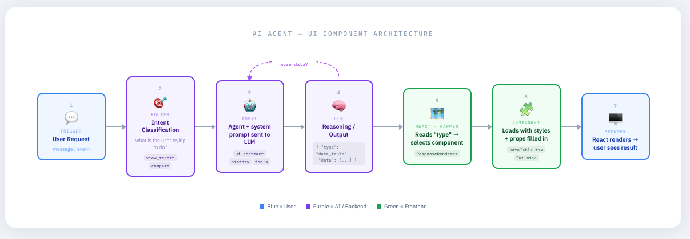
Overview
Enterprise Product Designer with 20+ years of experience bridging the gap between product vision and technical implementation across complex enterprise SaaS environments. Specialist in Figma, Claude Design, human-AI interaction patterns, stateful UI behavioral contracts, and design system strategy.
Featured System Case Studies
Herb Harden
Staff Enterprise Product Designer & AI UI/UX Systems Architect
Enterprise Product Designer with 20+ years of experience bridging the gap between product vision and technical implementation across complex enterprise SaaS environments. Specialist in Figma, Claude Design, human-AI interaction patterns, stateful UI behavioral contracts, and design system strategy.
Contact & Professional Links
Global UI/UX Design & System Specifications
Building a production-ready enterprise conversational platform from scratch—transitioning legacy procurement workflows into a deterministic "Intent → Insight → Action" model using strict component state machines and zero-reflow layout rules.
The Problem: Bringing Order to Non-Deterministic AI
In complex enterprise SaaS platforms like JAGGAER, raw LLM outputs present a major design challenge: streaming text is non-deterministic, causing visual reflows, unstable containers, and unpredictable user actions. Standard conversational UI elements are insufficient for high-stakes B2B procurement operations.
As Staff Enterprise Product Designer, I collaborated with global engineering squads to design, architect, and document the complete JAI Global UI/UX Component & Specification Library. This framework defines explicit layout bounds, dynamic rendering state matrices, and structured input controls so engineering teams can build zero-defect React interfaces directly from JSON payloads.
System Architecture: AI Agent to UI Component Pipeline
images/jai-system-pipeline-diagram.png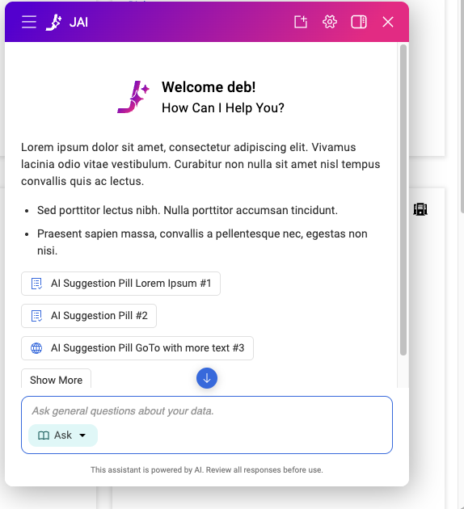
Core Design System Deliverables
Engineered a complete matrix of responsive card behaviors (No Card, Compact 5-row view, Expanded 10-row view, Action Button variants, Pagination, and Graph Summaries) to guarantee container heights and prevent layout reflows during LLM streaming.
Designed input controls that allow enterprise users to explicitly signal intent before issuing a prompt—separating transactional execution ("Act" - e.g., Create Invoice) from policy guidance ("Ask" - e.g., Purchase Request rules).
Visual Specification Showcase

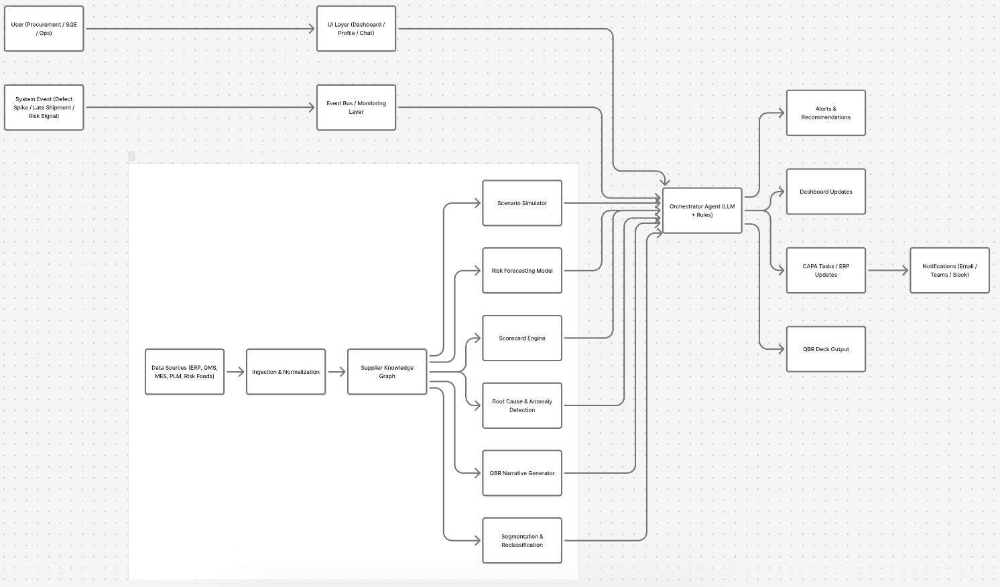
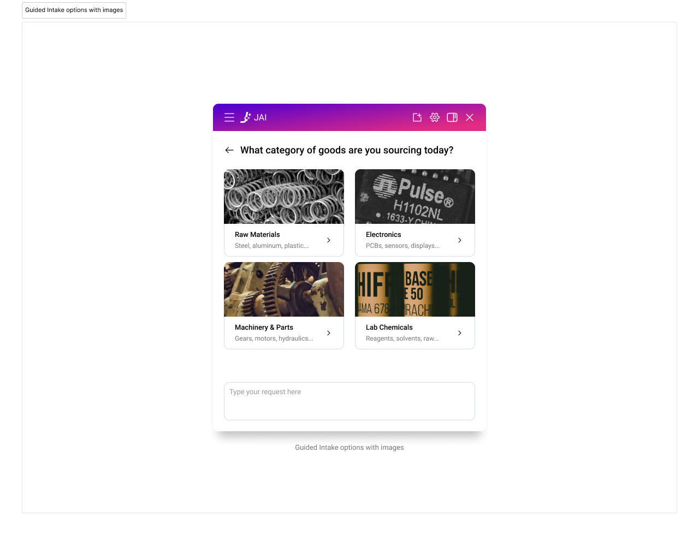
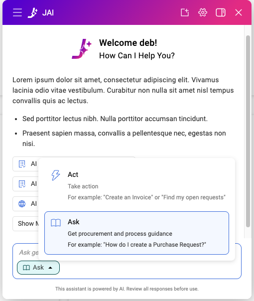
By standardizing these UI specifications across global squads, JAI achieved a unified conversational interaction language that eliminated design fragmentation, prevented front-end engineering reflow defects, and established the design system foundation for all subsequent AI features in the enterprise suite.
Global Customer Care HITL Workflows & Edge Cases
Architecting end-to-end Human-in-the-Loop (HITL) handoff protocols, multi-attempt failure handling, ticket generation workflows, and state-driven UI/UX components to ensure zero dead-ends for enterprise support operations.
Case Study Overview
In high-stakes enterprise SaaS customer care, an AI assistant must recognize its limitations. When an AI agent encounters unresolvable queries or repeated failure loops, leaving users without a clear path forward leads to severe customer churn and operational friction.
I designed and architected the complete Global Customer Care HITL Workflows & Edge Cases system. This framework maps every logic node, decision threshold, and state transition required to detect AI failure states, escalate gracefully to human representatives, pre-fill structured support forms, and provide transparent confirmation patterns for the user.
Core Architecture & Primary Workflow Artifacts


Additional HITL & Workflow UI Artifacts
Supplementary interaction designs, edge-case states, and alternate workflow variations for this project.
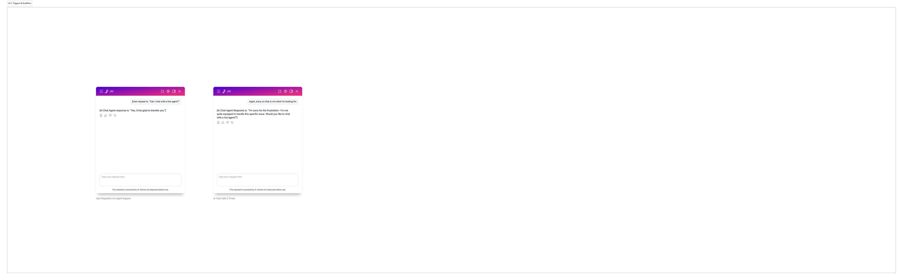
Open Original ↗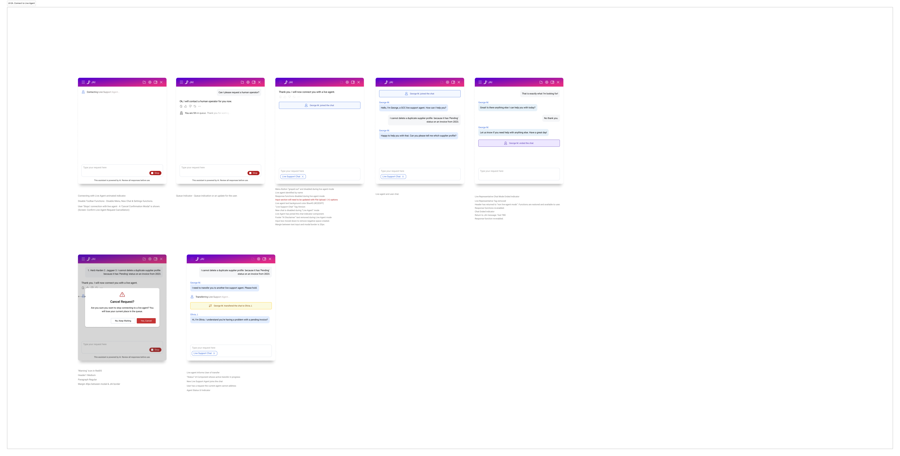
Open Original ↗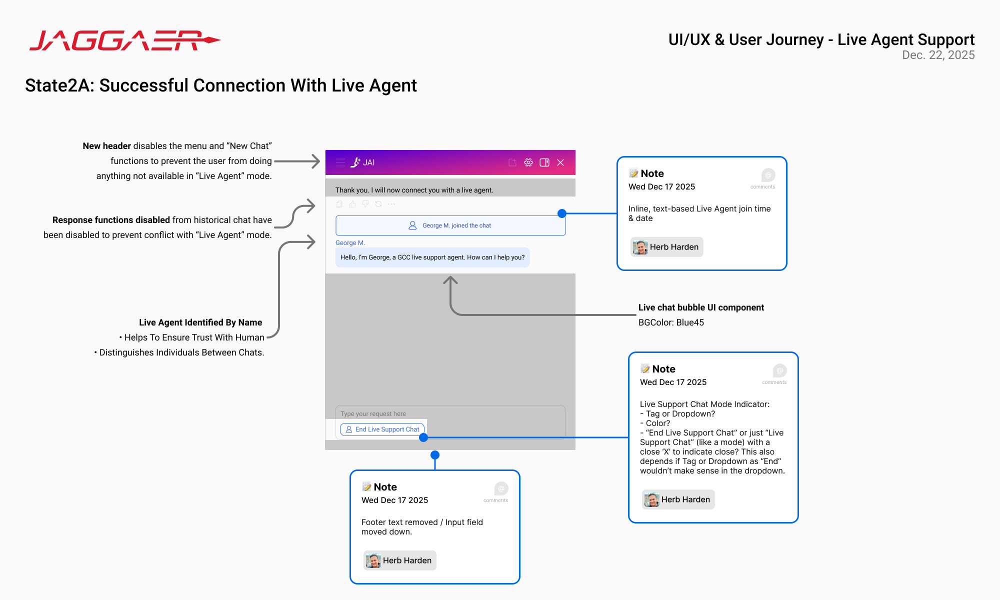
Open Original ↗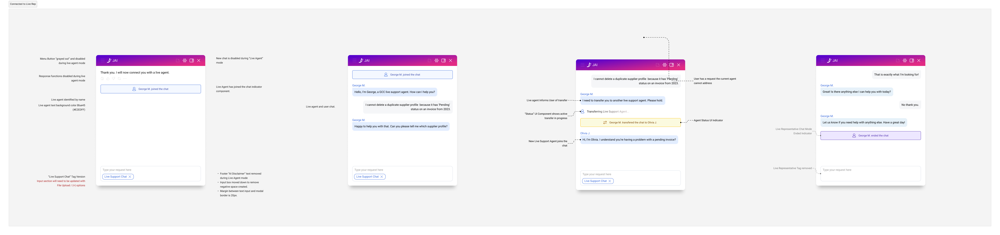
Open Original ↗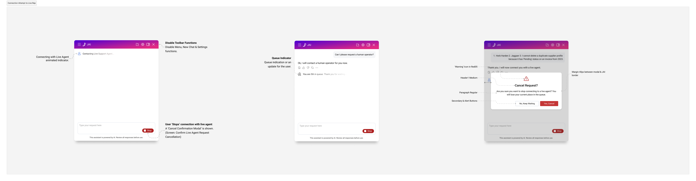
Open Original ↗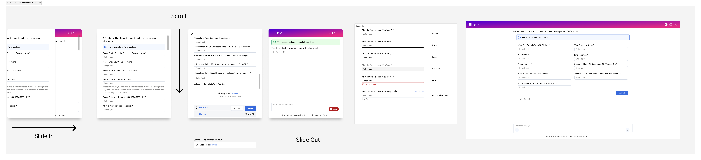
Open Original ↗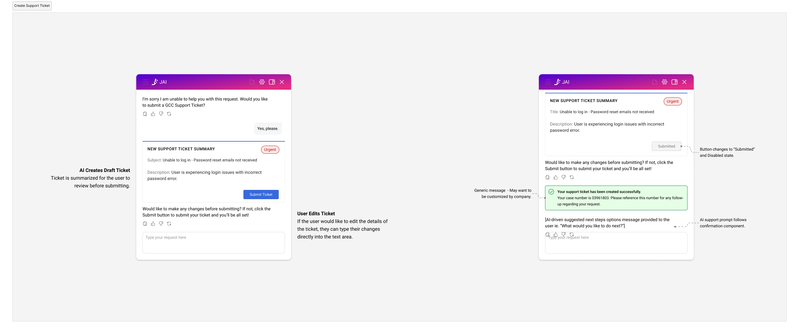
Open Original ↗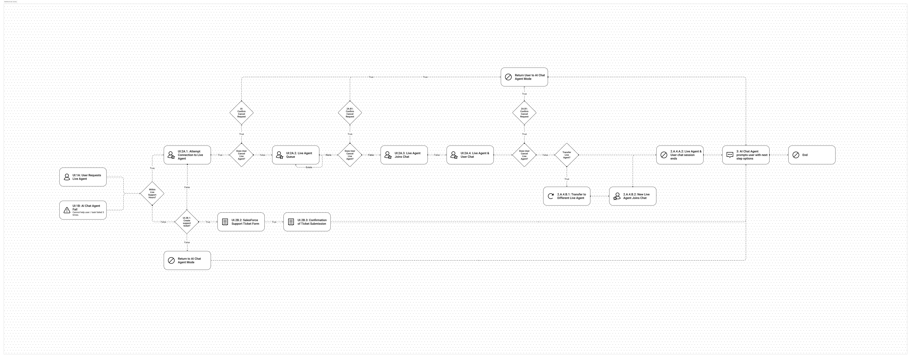
Open Original ↗By designing robust HITL handoffs and capturing edge cases upfront, the system drastically reduced support ticket abandonment, improved customer satisfaction during AI failure states, and provided live support teams with richer, actionable context for faster issue resolution.